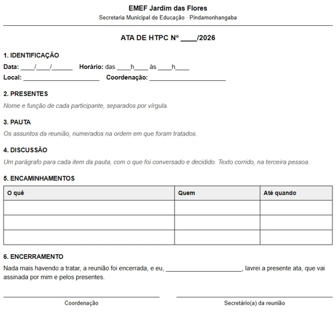
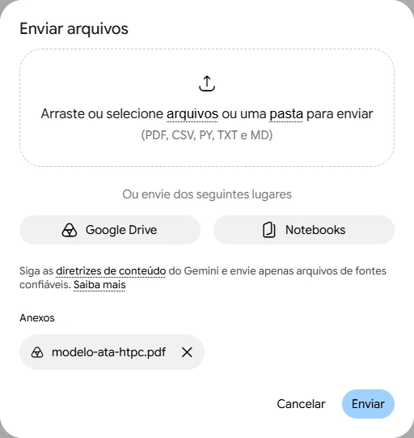
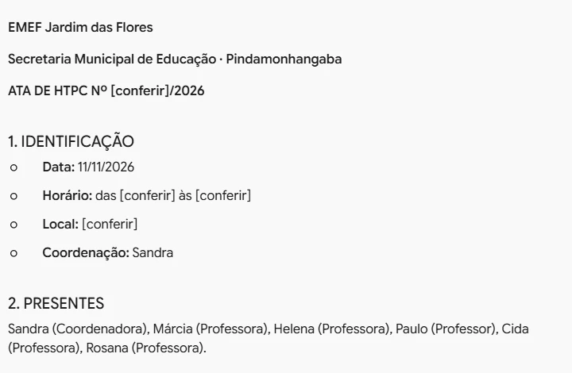
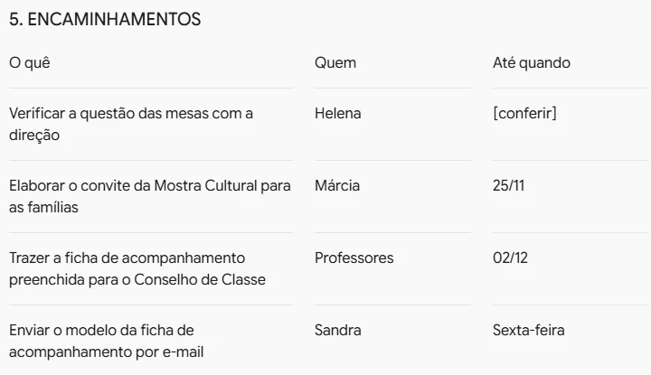

Criar uma habilidade de ata
A habilidade também guarda o modelo de ata da escola. Você cola as anotações da reunião e recebe a ata pronta para conferir
@ata-htpchtpc 11/11 · presentes: coord. Sandra, profs Márcia, Helena… · 1) mostra cultural sábado 5/12…
a habilidade segue o modelo da escola1. IDENTIFICAÇÃOData: 11/11/2026 · Horário: [conferir]
5. ENCAMINHAMENTOSElaborar o convite da Mostra Cultural · Márcia · 25/11

Tenha o modelo em PDF
- No tutorial do bilhete, a habilidade guardou um pedido. Aqui, ela guarda também um arquivo: o modelo de ata da escola.
- Use o modelo da sua escola, salvo em PDF. Para praticar, baixe o nosso.
A EMEF Jardim das Flores e as pessoas da reunião são inventadas para este exemplo.
Baixar o modelo de ata (PDF)Transforme as anotações de reunião que eu passar em uma ata, seguindo o arquivo modelo-ata-htpc.pdf. Use as mesmas seções do modelo, na mesma ordem. Escreva só o que está nas anotações. Se faltar alguma informação, como horário ou local, escreva [conferir]. Não use o nome de alunos.
Escreva a instrução
- Em Personalizar › Habilidades, clique em Criar › Criar manualmente, como no bilhete.
- Nome: Ata HTPC. Descrição: Use quando eu passar as anotações de uma reunião ou HTPC. Escreve a ata no modelo da escola.
- Em Instruções, cole o texto ao lado. A regra do [conferir] impede o Gemini de inventar o que você não anotou.

Anexe o modelo e crie
- No alto do formulário, clique em Adicionar arquivos. Arraste o PDF para a janela ou clique em arquivos para escolher no computador.
- O modelo aparece em Anexos. Clique em Enviar e depois em Criar.
- A habilidade guarda uma cópia do arquivo. Mudou o modelo da escola? Edite a habilidade e envie o novo.
@ata-htpc
chamar a habilidadehtpc 11/11
presentes: coord. Sandra, profs Márcia, Helena, Paulo, Cida e Rosana
1) mostra cultural - sábado 5/12 de manhã, cada turma expõe os trabalhos do projeto do semestre. Helena vê com a direção as mesas. convite pras famílias sai até 25/11, Márcia faz
2) conselho de classe dia 2/12, cada prof traz a ficha de acompanhamento preenchida. Sandra manda o modelo da ficha por email até sexta
3) informe: lab presencial do curso de IA quinta
Cole as anotações
- Numa conversa nova, digite @ata e clique em ata-htpc.
- Cole as anotações da reunião do jeito que estão: abreviadas, sem pontuação, em tópicos. Também dá para ditar pelo microfone.
- Repare que as anotações não dizem o horário nem o local.

Leia a ata
- A ata vem com o cabeçalho e as seis seções do modelo, na mesma ordem.
- Onde as anotações não diziam nada, como horário e local, aparece [conferir]. O Gemini não inventou.

Complete o que falta
- Os encaminhamentos viraram uma tabela: o quê, quem e até quando. A tarefa da Helena ficou sem prazo porque as anotações não diziam.
- Copie a ata para o Google Docs e troque cada [conferir] pela informação certa.
- Na próxima reunião, é só @ata-htpc e as anotações. Leia a ata inteira antes de levar para assinatura: quem assina responde por ela.